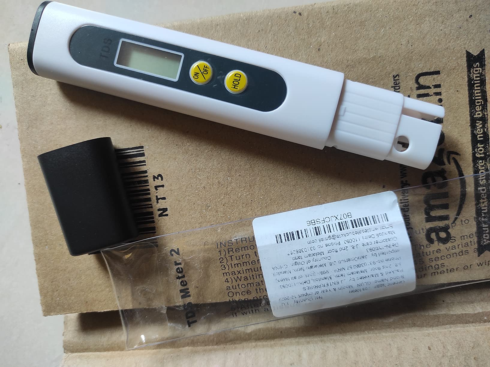
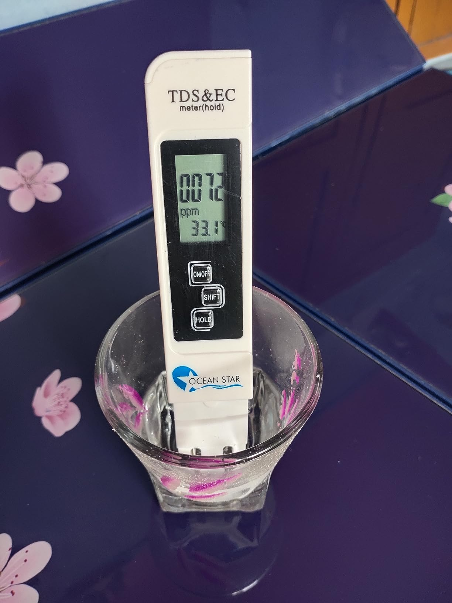
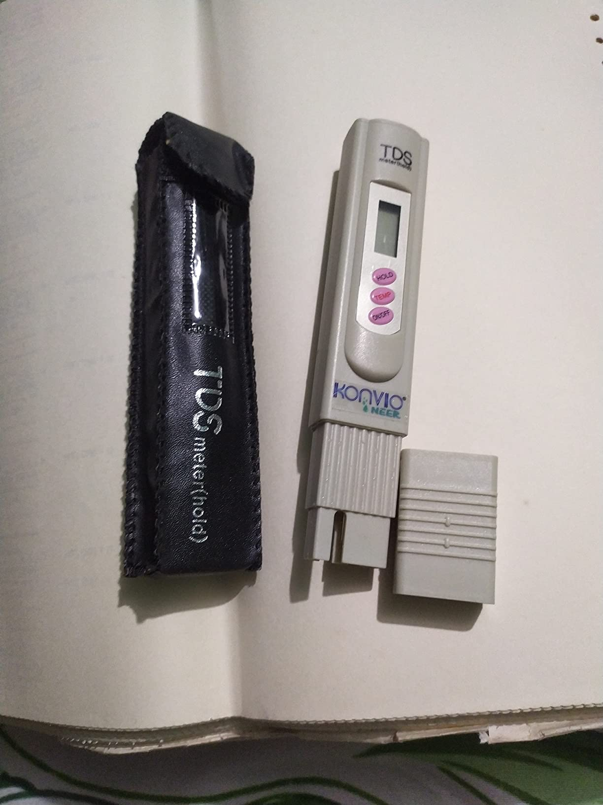

Total Dissolved Solids Meter, Water Quality Tester, Ppm Tester For Water Testing

Price: ₹299
For latest discounts, please click on "Buy Now"
Why you should BUY!
The TDS - Water Quality Tester is an essential tool for ensuring the safety and quality of your drinking water. It accurately measures the total dissolved solids (TDS) in water, providing you with valuable information about its purity. This tester is easy to use, portable, and perfect for home, office, or travel. Ensure your water is safe and healthy with the TDS - Water Quality Tester.Rating: ★★★★☆ (4.3/5) - 44,415 ratings
How to USE
Using the TDS - Water Quality Tester is simple and straightforward:
- Remove the protective cap from the tester.
- Turn on the tester by pressing the power button.
- Immerse the tester's probe into the water sample up to the maximum immersion level.
- Wait for the reading to stabilize, which usually takes a few seconds.
- Note the TDS reading displayed on the screen.
- Turn off the tester and dry the probe before storing it back in the protective cap.
Ensure your water is safe and healthy with the TDS - Water Quality Tester!
Buy Now Go BackWhat people think !
"Customers appreciate the build quality, accuracy, and ease of use of this water tester. They find it to be a reliable product that provides consistent readings. Many users value the TDS measurement feature."
Similar products
| Product | Image | Features | Price | Rating | Buy Now |
|---|---|---|---|---|---|
| GLUN Pre-Calibrated TDS meter |  | Pen Type Digital LCD TDS Meter Tester for Water Quality Testing (Ppm) | ₹169 | 4.0/5 (4,804) | Check |
| OCEAN STAR TDS meter |  | Digital 3-In-1 Water Tds Ec And Temperature Meter - Purity Tester With Atc Function, 1Ppm Resolution, 0-9990 Ppm Measurement Range | ₹299 | 4.2/5 (248) | Check |
| Konvio TDS meter |  | Digital Pocket TDS Meter with Temperature and Water Quality Measurement, Testing Meter | ₹325 | 4.1/5 (379) | Check |